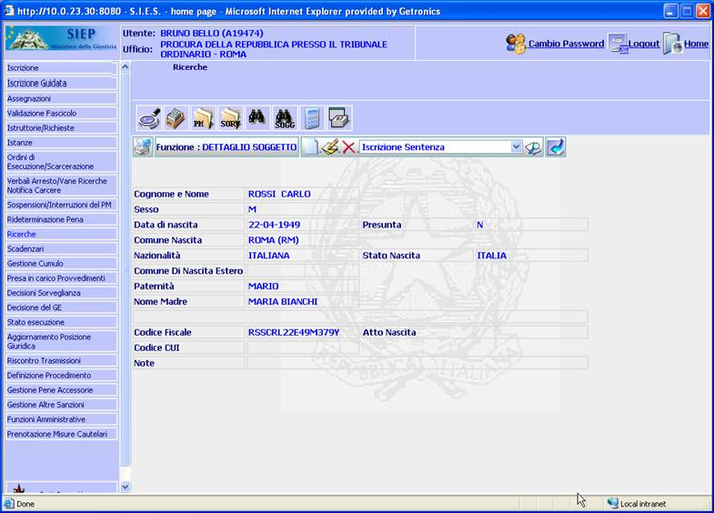
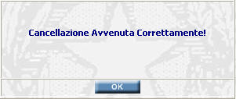

DETTAGLIO SOGGETTO: La funzione, consente di visualizzare i dati inseriti e registrati relativi ai dati anagrafici del condannato inseriti con la funzione Iscrizione Soggetto ed eventualmente effettuare modifiche e cancellazioni.
Inoltre si ha la possibilità di selezionare e svolgere le funzioni eseguibili in questo contesto
LE MASCHERE VIDEO
La funzione in esame viene realizzata attraverso l'utilizzo della seguente maschera che riporta gli elementi descrittivi e operativi dei dati anagrafici del condannato.

COME FARE PER ...
| Per eseguire, tramite il Menu a Tendina, una nuova funzione, coerente con il contesto applicativo in cui siamo, l'utente deve: |
selezionare, tramite la freccia a destra, le eventuali voci da inserire in tale campo. Non è possibile digitare del testo in questo campo.

cliccare sul pulsante
; si aprirà la maschera corrispondente alla funzione selezionata.
| Per iscrivere un nuovo soggetto l'utente deve: |
Cliccare sul pulsante
 ; si aprirà la maschera di
inserimento soggetto
che permette
di iscrivere un nuovo soggetto.
; si aprirà la maschera di
inserimento soggetto
che permette
di iscrivere un nuovo soggetto.
| Per modificare i dati inseriti relativi al soggetto l'utente deve: |
Cliccare sul pulsante
 ;
si aprirà la maschera
modifica soggetto che permette di
effettuare le modifiche volute.
;
si aprirà la maschera
modifica soggetto che permette di
effettuare le modifiche volute.
| Per cancellare il soggetto inserito tutti i dati relativi l'utente deve: |
Cliccare sul pulsante
 ;
verrà visualizzato il seguente messaggio:
;
verrà visualizzato il seguente messaggio:

a) Cliccando sul pulsante
 si annullerà
l'operazione di cancellazione e si ritornerà alla pagina di dettaglio del
soggetto.
si annullerà
l'operazione di cancellazione e si ritornerà alla pagina di dettaglio del
soggetto.
b) Cliccando sul pulsante

b1) se la cancellazione è possibile verrà effettuata e verrà visualizzato il seguente messaggio:

b2) Se invece non è possibile effettuare la cancellazione verrà visualizzato un messaggio con la motivazione:
CAMPI
Nella maschera sono presenti i seguenti campi.
| NOME | DESCRIZIONE |
| Funzione successiva | Selezionare tramite il menù a tendina la funzione successiva che si vuole eseguire |
PULSANTI
Oltre ai pulsanti orizzontali della maschera principale sono presenti i pulsanti di uso comune.
BOTTONI
Oltre ai comandi funzionali relativi al menù verticale non sono presenti nella maschera altri bottoni.
CONTROLLI
In questa maschera non sono effettuati controlli.